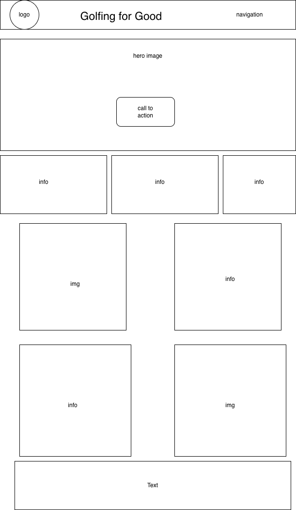
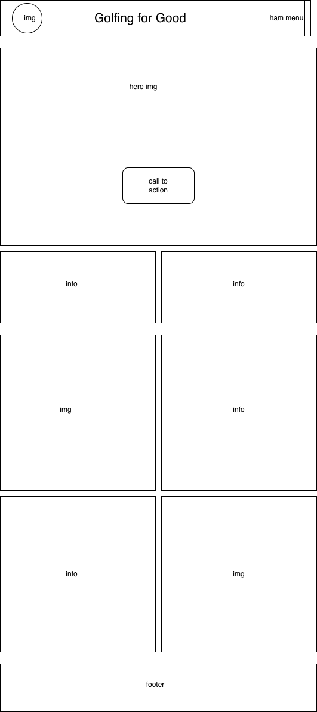

Site Name
The site name for my final project website is "Golfing for Good." I wanted to create a golf club that has tournament style events at rotating golf courses in the local area. All proceeds from these tournaments go to different charities for each event.
Site Purpose
This site will give all information regarding the upcoming charity golf events for the club. It will also give information about each course that will be played, and each charity that will be represented. There will also be form to sign up for the club. or to be a sponsor.
Scenarios
Which charities does this club support?
What days are the tournaments?
Do I have to sign up for the whole season, or can I sign up for just one event?
Can my business sponsor an event?
Color Scheme
Primary color: #1c3d2b - used for header and footer color, along with background on headings
Secondary color: #0f2a1d - used for headings on main
Tertiary color: #f2c94c - used for accents and borders, some text on dark backgrounds
Background color: #e6f0ea - used for the main background color of the page
Text color: #1a1a1a - used for majority of text on the page
Typography
Font: Dancing Script - used for headings and titles
Font: National Park - used for text blocks descriptions
Wireframe
Desktop View

Mobile View
